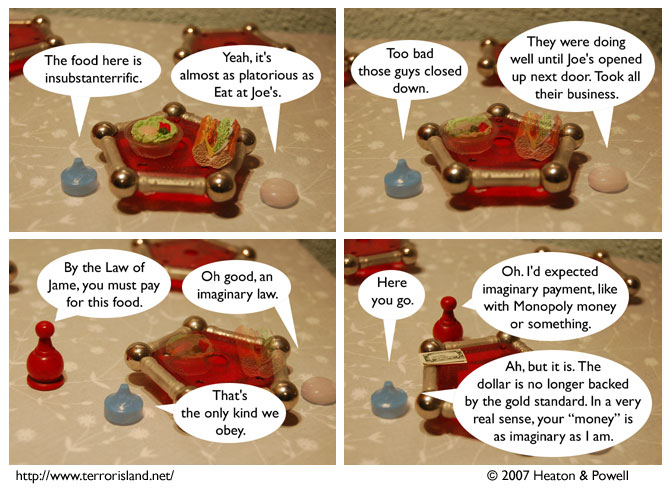

Strip #110
— Friday, February 23, 2007
Waiterman fell for the old fiat money trick
Notes, Thoughts, &c.
Ben’s Notes
A restaurant called “Eat at Joe’s” next to another restaurant called “Joe’s” was one of our earliest ideas for Terror Island. I’ve tried to get it in the strip a few times before, but it didn’t really fit right until now, when we had the idea of making it more imaginary.
Lewis’s Notes
Economists might disagree with the final panel assessment, but it turns out that economists are actually less credible than imaginary characters in a work of fiction.